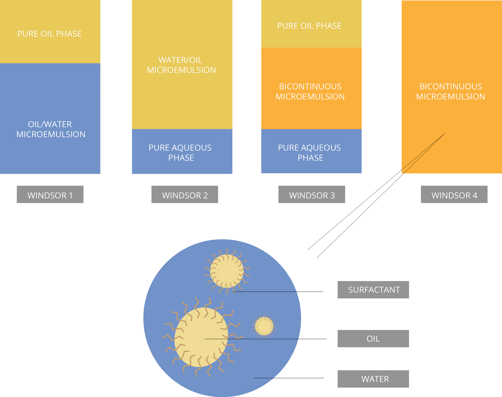

BRIEF
This summer I was selected to work on modelling research with the UCalgary iGEM team. Annually, the international
Genetically Engineered Machine (iGEM) competition brings teams across the world to present projects that apply
the principles of genetic engineering and synthetic biology to real-world challenges. The themes of the competition
are open ended, allowing teams to tackle any problem facing a chosen industry. This year, the iGEM Calgary 2019
team aims to tackle the issue of green seed within the Canadian canola agricultural industry.
Read more about our
solution
AIM
Oil and water emulsions play a major role in the success of our project. Once solutions containing oil, surfactant,
and water are emulsified, they settle out into distinct phases. These specific types of phases depends (in our case)
on four variables: the ratios of oil, water, surfactant, and the temperature of the solution.
The goal is to find the minimum composition of water needed to sufficiently separate out all chlorophyll. However we cannot go through each possible composition of all water, oil, and surfactant. Hence we use machine learning classification models to generate the phase boundaries which are most statistically probable given sparse training data obtained in vitro.
The goal is to find the minimum composition of water needed to sufficiently separate out all chlorophyll. However we cannot go through each possible composition of all water, oil, and surfactant. Hence we use machine learning classification models to generate the phase boundaries which are most statistically probable given sparse training data obtained in vitro.
DESCRIPTION OF PHASES
The type of equilibrium after emulsifying classified by phase using the Windsor scale, depicted below.

FIGURE 1: The classifications of the various emulsion equilibra, which is a function of the temperature of the emulsion and the concentration ratios of oil, water, and surfactant.
FIGURE 1: The classifications of the various emulsion equilibra, which is a function of the temperature of the emulsion and the concentration ratios of oil, water, and surfactant.
WHY APPLY MACHINE LEARNING?
It is common practice to display phases as a funciton of the solution composition ratio using a ternary diagram
(a readable way to present 4-dimensional data). They look this this:
FIGURE 2: An example of the data given that is to be classified with machine learning approaches.
This is analogous to the data that will be collected in the lab, however the colors here do not correspond to a phase yet.
Our task is to then approximate the phase boundaries by statistical approximations. I attempt to use \(\mathcal{K}\)-Nearest Neighbours and Support Vector Classification.
FIGURE 2: An example of the data given that is to be classified with machine learning approaches.
This is analogous to the data that will be collected in the lab, however the colors here do not correspond to a phase yet.
Our task is to then approximate the phase boundaries by statistical approximations. I attempt to use \(\mathcal{K}\)-Nearest Neighbours and Support Vector Classification.
OUTLINE OF DATA
The data given is four dimensional, containing three compositions of oil, water, and surfactant, and its equilibrium
phase. Our model is looking to find a function \(F \; : \; \vec{v} \longrightarrow y \> \) mapping a given vector to a phase class such that,
$$ \vec{v} = \begin{pmatrix} r_{oil} \\ r_{water} \\ r_{surfct} \end{pmatrix}$$
$$ r_{oil} + r_{water} + r_{surfct} = 1$$
$$ y \in \{Windsor1, Windsor2, Windsor3, Windsor4\}$$
\(\mathcal{K}\)-NEAREST NEIGHBOURS CLASSIFICATION
The aim of a general classification model is to provide the likelihood a new unlabelled vector lies within a class.
The \(\mathcal{K}\)-Nearest Neighbours method is a non-parametric approach which looks at the \(\mathcal{K}\) nearest (in terms of distance)
vectors within the space and assigns a label based on those closest neighbours. The probability given a vector
from described above will be labeled with phase can be calculated with KNN by:
$$ Pr( \> Y = y \> | \> X = \vec{v}) = \frac{1}{\mathcal{K}} \sum_{i \in \mathcal{N}}^{} I(\> y_i = y \>)$$
Where \(i\) indexes through the \(\mathcal{K}\) nearest vectors in \(\mathcal{N}\) and I is the identity function which outputs a 1 if the label of the neighbour is equal to and 0 otherwise (James et al. 2017).
SUPPORT VECTOR CLASSIFICATION
Support Vector Classification (SVC) provides a classification approach which finds a hyperplane that divides two
classes of vectors within a space. The goal is to find the maximum margin between the labelled data and generate
parameters for a hyperplane that would divide this margin. The optimization problem of generating a separating
hyperplane between two classes holding \(n\) data points can be summarized:
$$ \max_{\beta_0, \beta_1, \beta_2, \beta_3, \epsilon_i, \ldots, \epsilon_n} \mathcal{M} $$
subject to,
$$\beta_0^2 + \beta_1^2 + \beta_2^2 + \beta_3^2 =1 $$
$$ y_i(\beta_0 + \beta_1 x_{i1} + \beta_2 x_{i2} + \beta_3 x_{i3} \geq \mathcal{M}(1-\epsilon_i)$$
$$ \sum\limits_{i=0}^{n} \epsilon_i \leq \mathcal{C}, \>\>\>\>\> \epsilon \geq 0, \>\>\>\>\> y_i \in \{1, -1\}.$$
Where \(\mathcal{M}\) is the size of the margin, \(\beta_i\) are the parameters defining the hyperplane, \(y_i\) is the label of each vector which
can only be 1 or -1. \(\epsilon_i\) is the error for each vector which is constrained by \(\mathcal{C}\), the cost parameter (James et al. 2017).
Since we have four classes to be separated, we applied the one-versus-one approach, where divisions were constructed for each pair of classes, meaning this optimization was solved 6 times ( \(\frac{n(n-1)}{2}\) is the number of distinct pairs between \(n\) elements.) Since the data is not linearly separable, a non-linear radial basis function (RBF) was used as a kernel: $$K(\vec{v_0}, \vec{v_i}) = e^{- \; \gamma \; \vec{v_0} \; \dot \; \vec{v_i}}$$ Where \(\vec{v_0}\) is the vector to be labelled, and the kernel is applied on each training vector \(\vec{v_i}\) for this test observation. \( \gamma \) is a parameter subject to choice.
The second parameter \(\mathcal{C}\) specifies the amount of errors allowed within the separating hyperplane, allowing the adjustment of the model’s bias-variance trade off. This trade off is an important consideration in the approximation of any function. Approximations that are more flexible have greater variance (tend to follow the data closely) and have low bias. A low value of \(\mathcal{C}\) means the separation cannot allow for many errors, which implies the model will look more flexible and possibly overfit.
Since we have four classes to be separated, we applied the one-versus-one approach, where divisions were constructed for each pair of classes, meaning this optimization was solved 6 times ( \(\frac{n(n-1)}{2}\) is the number of distinct pairs between \(n\) elements.) Since the data is not linearly separable, a non-linear radial basis function (RBF) was used as a kernel: $$K(\vec{v_0}, \vec{v_i}) = e^{- \; \gamma \; \vec{v_0} \; \dot \; \vec{v_i}}$$ Where \(\vec{v_0}\) is the vector to be labelled, and the kernel is applied on each training vector \(\vec{v_i}\) for this test observation. \( \gamma \) is a parameter subject to choice.
The second parameter \(\mathcal{C}\) specifies the amount of errors allowed within the separating hyperplane, allowing the adjustment of the model’s bias-variance trade off. This trade off is an important consideration in the approximation of any function. Approximations that are more flexible have greater variance (tend to follow the data closely) and have low bias. A low value of \(\mathcal{C}\) means the separation cannot allow for many errors, which implies the model will look more flexible and possibly overfit.
K-FOLD CROSS VALIDATION
\(K\)-fold cross validation provides some reasoning for the parameter choices within the model. To attempt to validate
the model’s classifications, the data is split into two partitions: train and test. \(K\)-fold cross validation
outlines the way to choose such partitions. The model is trained and fed the test observations without a label.
The model predicts each unlabelled test observation and is compared to its actual label (class), giving a
quantification on the models accuracy. For \(K\) partitions of the data, the mean error rate of a model with given
parameters is calculated as:
$$ \frac{1}{N}\sum\limits_{i=1}^{K} \sum\limits_{y_p \in Y_i}^{} I(\> y_p \neq y_a ) $$
Where \(N\) is the number of data points (including train and test), \(y_p\) is the predicted label calculated by the model for all test vectors in partition \(Y_i\) , and \(y_a\) is the actual label of the vector (James et al. 2017).
It is not sufficient to merely choose a single subset for testing because it can be an inaccurate representation
of which points the model can predict well. \(K\)-fold Cross Validation attempts to address this by using \(K\) partitions
of the data to resample. The error rate is then determined by averaging each of the partition error, providing a
more representative reading of the model’s true error rate.
COMPARISON OF \(\mathcal{K}\)-NEAREST NEIGHBOURS AND SUPPORT VECTOR CLASSIFICATION
I implemented 10-fold cross validation on a range of parameter combinations with both SVC and KNN. The figure below
de